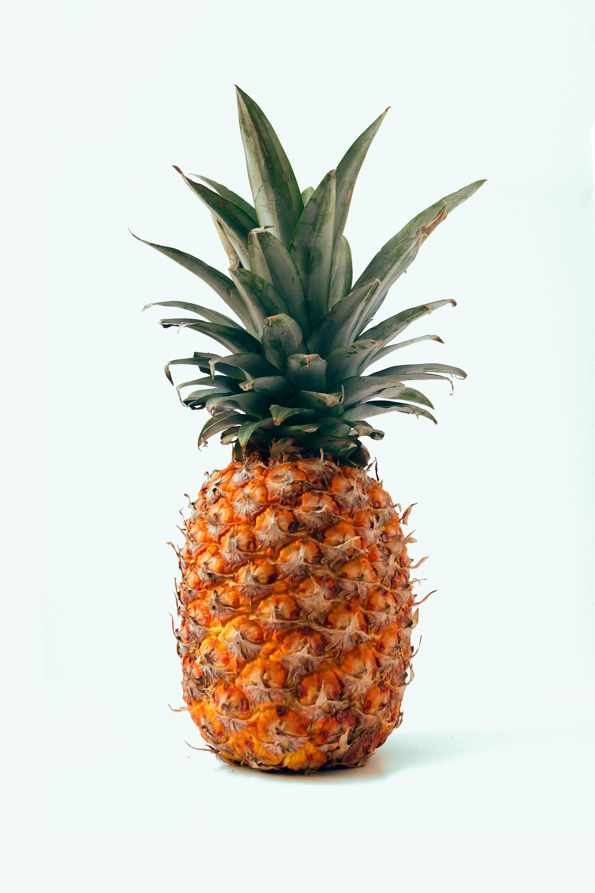
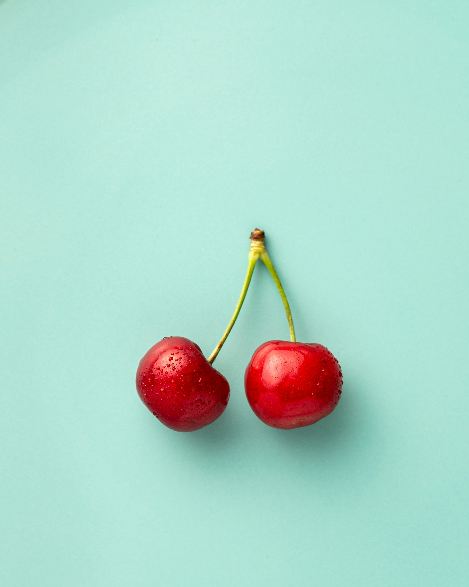

Fruits are the means by which angiosperms disseminate their seeds. Edible fruits in particular have long propagated using the movements of humans and other animals in a symbiotic relationship that is the means for seed dispersal for the one group and nutrition for the other; humans, and many other animals, have become dependent on fruits as a source of food.

